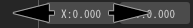

02.パーティクルをばらまいてみよう！¶
概要¶
本章では、パーティクルをばらまいてみます。 これだけでは味気ないですが、Effekseerの基本操作を覚えれます。 本章で覚えた知識をもとに、次の章で格好いいエフェクトを作成します。 そのため、しっかり理解しましょう。
位置の編集¶
初期配置の位置の編集¶
現在は、中央にパーティクルが表示されています。このパーティクルを中央から移動させてみます。
中央に表示
まず、画面の右側の「ノードツリー」の「Node」をクリックします。「ノードツリー」のウインドウは エフェクト全体の構成を示しており、「Node」はパーティクルを示しています。これを編集することにより、 このパーティクルの形状を編集できます。
ノードツリーウインドウ
クリックすると、大量の編集可能なパラメーターが表示されます。 初めてだと驚くかもしれないですが、本章で編集するパラメーターは一部のみです。
初期配置の位置を編集するには、「位置」のウインドウのパラメーターを編集します。
位置ウインドウを表示するには、画面右上に表示されているタブの「位置ウインドウ」のアイコンをクリックします。
位置ウインドウのアイコン
位置ウインドウ
位置のウインドウの位置のxの数値を0から2に変更してみましょう。
値は入力欄をマウスで左クリックするとキーボードから入力できるようになります。
左クリックで入力欄をドラッグすると、値を徐々に変更することができます。
xの数値を変更
そうすると、パーティクルの位置が中央から外側に移動しました。
外側に移動
パーティクルが移動するようにする¶
パーティクルが静止している状態では面白くありません。パーティクルが移動するようにしましょう。
Effekseerには位置を指定する方法が複数あります。
初期設定では位置が固定されていますが、速度や加速度を指定できる設定方法があります。
位置ウインドウのドロップダウンリストをクリックして、位置から位置・速度・加速度に変更します。 そうすると、位置ウインドウに速度や加速度を入力するテキストボックスが追加されます。 パーティクルの速度や加速度を設定できるようになるため、パーティクルを動かせるようになります。
位置・速度・加速度
x方向の速度(中心)に0.1と入力しましょう。
位置・速度・加速度
そうすると、画面外に飛び出すようになりました。

移動するエフェクト
他の数値も入力して、挙動がどう変化するか試してみましょう。
パーティクルが複数表示されるようにする¶
多くのエフェクトでは、パーティクルが1つしかないことはほとんどないです。 パーティクルを複数表示させてみましょう。
パーティクルの数は、共通ウインドウの生成数に設定されています。 この数を増やすと、たくさんのパーティクルが生成されるようになります。
共通ウインドウを表示するには、共通ウインドウのアイコンをクリックします。
共通ウインドウのアイコン
生成数
生成数の数値を100にしてみましょう。
生成数を増やす
沢山、パーティクルが生成されるようになりました。 ただ、全てのパーティクルの移動する方向が一緒なので、パーティクルが重なって表示されてしまいます。

生成数を増やす
パーティクルをランダムな方向に移動させる¶
パーティクルの移動方向が同じだと、パーティクルが重なって表示されてしまいます。 そこで、パーティクルごとにランダムな方向に移動するようにします。
位置ウインドウの速度のxyzの振幅に0.1と入力しましょう。さらに、先ほど中心に入力した0.1を0に戻します。
これは、速度は-0.1～0.1の間でランダムに設定される、ということを示しています。 すなわち、パーティクルは(0,0,0)を中心に全周囲に移動します。
ランダム
パーティクルが全周囲に移動するようになりました。

ランダム

まとめ¶
今回はパーティクルを複数生成し、移動させてみました。 次章では、パーティクルから、よりエフェクトらしい見た目に編集します。